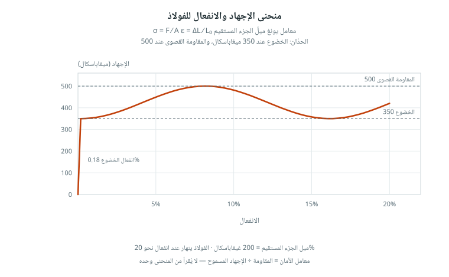

الهندسة الميكانيكية
Mechanical engineering
هندسة القوى والحركة والحرارة في الآلات والأجسام: تحليل الإجهاد والانفعال، والاهتزاز، والانتقال الحراري، والتصميم بأمان مقيس. مفتاحها منحنى الإجهاد–الانفعال، فميله معامل يونغ وتغيّره بعد الخضوع يعني تشكيلًا دائمًا لا عودة.
الهندسة الميكانيكية تتعامل مع الجسم المادي كوحدة تُحلَّل: ما القوى الواقعة عليه؟ ما الإجهاد الداخلي الناتج؟ هل يبقى في نطاق المرونة؟ وكم يتشكّل عند الحدّ؟ والجواب لا يأتي من الحدس بل من علاقات مقيسة: الإجهاد = القوة ⁄ المساحة، والانفعال = التغيّر في الطول ⁄ الطول الأصلي، والربط بينهما في نطاق المرونة معامل يونغ.
والتصميم الميكانيكي قرار في منطقة رمادية: أكبر إجهاد مسموح أقل دائمًا من حدّ الخضوع بمعامل أمان محسوب، لأن التحميل ليس ثابتًا ولا المادة مثالية ولا الحساب كاملًا. وتُدخل Fatigue بعد دورات التحميل المتكررة، والاهتزاز عند الترددات القريبة من التردد الطبيعي، والحرارة التي تخفض الخواص أو تُحرّض التمدد والتقييد.
الآلية
كيف يحدث الأمر على مستوى الجسيمات أو المتغيّرات المباشرة
في نطاق المرونة تتحرّك الذرّات في الشبكة البلورية من موضعها بمسافات صغيرة جدًّا ثم تعود، فيكون الانفعال خطيًّا مع الإجهاد. عند حدّ الخضوع تبدأ انزلاقات في المستويات البلورية تتيح للذرّات أن تستقرّ في مواضع جديدة، فتصير التشكيلات دائمة. ويعود ارتفاع الإجهاد بعد الخضوع إلى التعنّق: يقلّ المقطع الناقل فيزداد الإجهاد الهندسي بعد أن يكون الحقيقي قد بدأ. أما الكسر فيقع عند تراكم الشقوق ووصولها إلى حجم حرج محسوب بميكانيكا الكسر لا بالإجهاد وحده.
الأرقام والوحدات
العلاقات والوحدات والنطاقات العددية التي تسند الشرح
لفولاذ إنشائي معامل يونغ 200 جيجا باسكال وحدّ خضوع 350 ميجا باسكال: انفعال الخضوع = 350×10⁶ ⁄ 200×10⁹ = 0.00175 أي 0.175%. وطاقة المرونة النوعية = σy² ⁄ (2E) = 350² ⁄ (2×200,000) ميجا باسكال = 0.306 ميجا جول/م³. ولو صُمّم العضو عند نصف حدّ الخضوع لكان معامل الأمان 2، ولو ارتفعت الحرارة 300 درجة في الفولاذ الكربوني انخفض حدّ الخضوع بنسبة تُقارِب الثلث وتصير المرونة أقل من الحساب.
الفرق الدقيق
المفهوم الملتبس الذي يُخلَط به، وأين ينفصلان
الإجهاد ليس القوة: الإجهاد قوة على وحدة المساحة، ولهذا ينكسر سلك رقيق بوزن صغير وينجو عمود سميك من وزن كبير. والانفعال ليس التشكيل المرئي: هو نسبة تغيّر الطول، وقد يكون صغيرًا جدًّا مع قوة كبيرة في مادة صلبة. ومعامل يونغ ليس صلابة العضو: هو خاصية للمادة، أما صلابة العضو فتتغيّر بالمقطع والطول. والحدّ الأقصى للإجهاد ليس إجهاد الكسر: الحدّ الأقصى هو أعلى نقطة، والكسر يحدث بعدها بانخفاض في الإجهاد الهندسي.
حدود التعريف
أين ينكسر التعريف أو النموذج وما الذي لا يفسّره
علاقة الإجهاد–الانفعال الخطية تفترض مادة متجانسة وخواص ثابتة الاتجاه، وهي لا تنطبق على المواد المركّبة أو الخشب أو البوليمرات التي تعتمد على الزمن. ومنحنى الشدّ الأحادي لا يتنبّأ بسلوك العضو تحت إجهاد متعدّد المحاور، فيلزم معيار خضوع مثل فون ميزس أو تريسكا. والتعب (Fatigue) يحدث عند إجهاد أقل بكثير من حدّ الخضوع بعد ملايين الدورات، فلا يكفي منحنى شدّ واحد. أما في الأجواء الحارّة فتُضاف الزحف (Creep) التي تجعل التشكيل يتراكم بالزمن تحت إجهاد ثابت أقل من حدّ الخضوع.

| الكمية | القيمة | المصدر |
|---|---|---|
| معامل يونغ للفولاذ الإنشائي | 200 جيجا باسكال | [1] |
| انفعال الخضوع عند σy = 350 MPa | 0.175 % | [2] |
| طاقة المرونة النوعية σy² ⁄ 2E | 0.306 ميجا جول/م³ | [2] |
| كثافة الفولاذ الكربوني | 7850 كغم/م³ | [3] |
المصادر
- 1 Stress and strain — elastic modulus and yield behaviour of steel — Encyclopaedia Britannica. www.britannica.com/science/stress-physics · اطُّلع عليه 2026-11-16
- 2 Mechanical properties of metals — elastic and plastic deformation — LibreTexts, Materials Science. eng.libretexts.org/Bookshelves/Materials_Science · اطُّلع عليه 2026-11-16
- 3 Engineering ToolBox — Young's Modulus of common materials — Engineering ToolBox. www.engineeringtoolbox.com/young-modulus-d_417.html · اطُّلع عليه 2026-11-16
استشهد بهذا المصطلح
الصيغتان مبنيتان من بيانات الصفحة نفسها: العنوان والتاريخ ورابط النسخة المنشورة.
الهندسة الميكانيكية — Mechanical engineering. (2026). ديوان المعرفة — انفراد. https://infiradev.com/diwan/terms/mechanical-engineering.html
@misc{mechanical-engineering2026,
title = {الهندسة الميكانيكية},
titleaddon = {Mechanical engineering},
howpublished = {{ديوان المعرفة — انفراد} — مرجع علمي عربي},
year = {2026},
url = {https://infiradev.com/diwan/terms/mechanical-engineering.html},
urldate = {2026-11-16},
note = {مراجعة علمية: مراجعة آلية — ديوان المعرفة (روابط المصادر + عقد المحتوى + وجود الرسم) 2026-11-16}
}
راجعه: مراجعة آلية — ديوان المعرفة (روابط المصادر + عقد المحتوى + وجود الرسم) 2026-11-16 · 2026-11-16 · آخر تحديث 2026-11-16